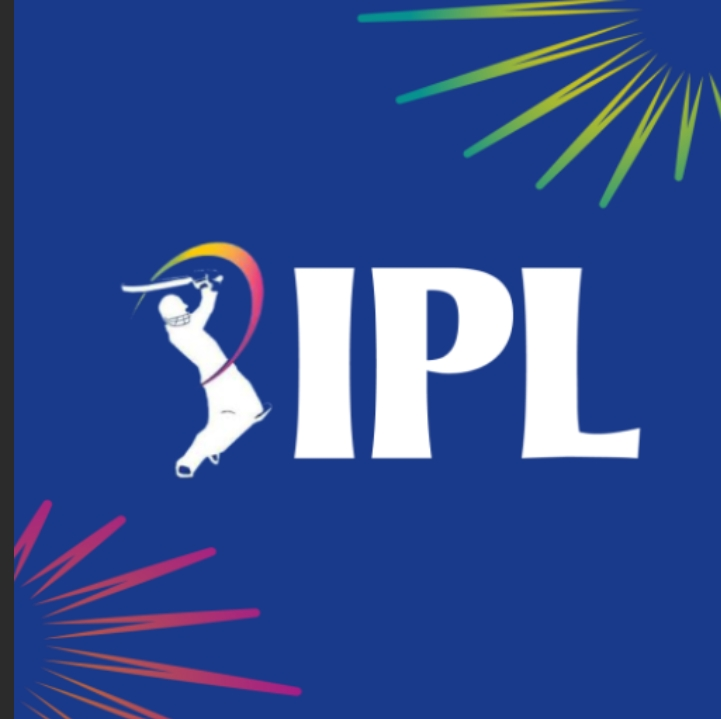
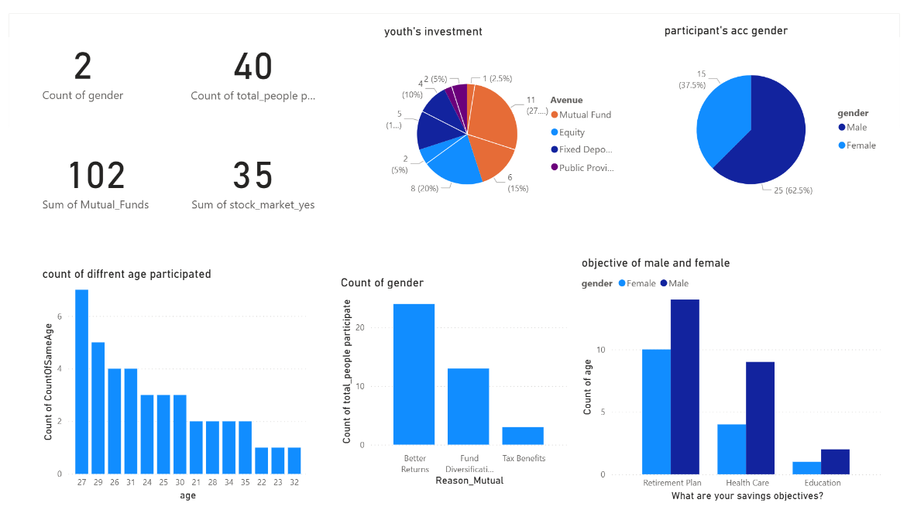
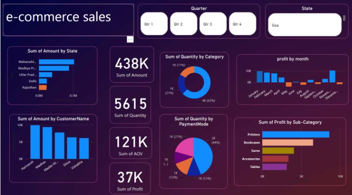
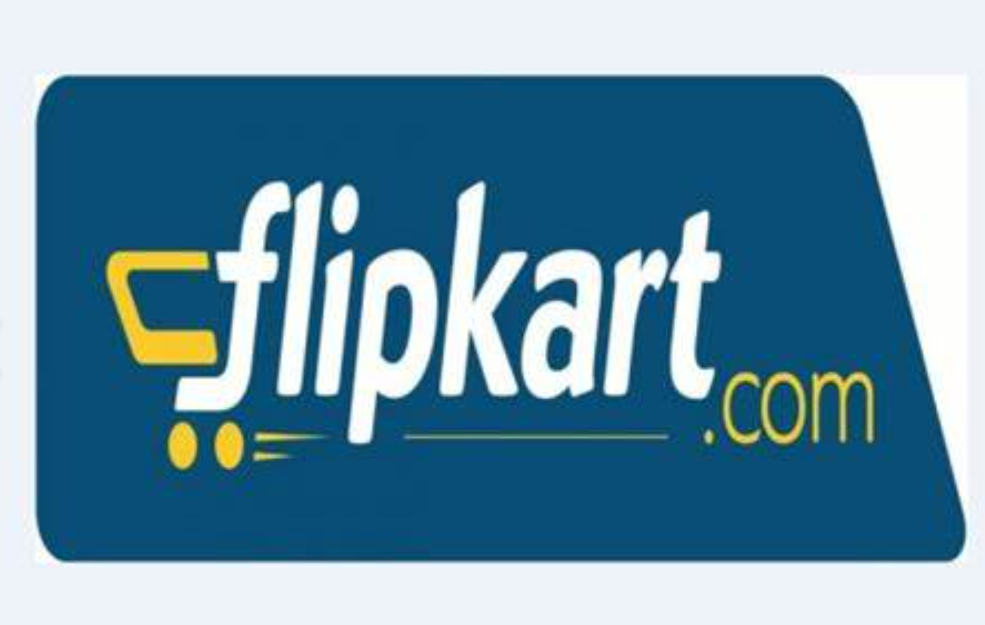

Backend Development
Built scalable and maintainable backend services using Flask and Django, following RESTful API principles and clean architecture.
I am an Engineering graduate
I’m a Computer Science and Engineering student at S.R.M University, with hands-on experience in Python, FastAPI, and data analytics. During my internship at Sroniyan Technologies, I contributed to backend development using FastAPI, working on scalable API services. At the Centre for Railway Information Systems (CRIS), I focused on transforming raw datasets into actionable insights to support compliance and decision-making. My academic projects—such as a Job Insights Analysis and an AI-powered Health Chatbot—showcase my ability to integrate Python, data visualization tools, and NLP techniques to solve real-world challenges. Certified in MongoDB, DBMS, and Cybersecurity, I’ve built a strong technical foundation complemented by leadership and communication skills developed through my role as President of the Rotaract Club. I’m eager to contribute to dynamic teams where I can apply and grow my backend and data expertise.
Built scalable and maintainable backend services using Flask and Django, following RESTful API principles and clean architecture.
Automated repetitive workflows, data cleanup, and deployment pipelines using Python scripts and tools like playwright,beutifulsoup and Selenium
Integrated relational (PostgreSQL, MySQL) and NoSQL (MongoDB, Redis) databases into Python applications, using ORM tools like SQLAlchemy and PyMongo.
Implemented unit tests with pytest and continuous integration pipelines with GitHub Actions and Docker to ensure code reliability and deployment readiness.
Developed intelligent features using NumPy, pandas, and scikit-learn.
This project involves an end-to-end pipeline for analyzing startup funding data using Python-based tools. The workflow begins with data ingestion through Pandas, where the raw dataset is cleaned and transformed to ensure consistency and usability. The data is then processed to derive meaningful insights by aggregating across relevant features like investor profiles, funding years, and sectors. These insights are visualized through an intuitive interface built with Streamlit, featuring interactive filters and charts. The solution is deployed either locally or on the cloud, enabling dynamic, browser-accessible analytics tailored for stakeholders in the startup ecosystem.

I'm excited to share my latest project—a backend API for IPL data analysis using Flask! This API enables seamless access to detailed match statistics, bowler performances, and team insights.

Aenean ornare velit lacus, ac varius enim lorem ullamcorper dolore. Proin aliquam facilisis ante interdum. Sed nulla amet lorem feugiat tempus aliquam.
An AI Healthcare Chatbot is a virtual assistant designed to provide medical-related information, support, and services to users. It leverages natural language processing (NLP), machine learning (ML), and healthcare databases to assist patients(ollama model), doctors, and healthcare providers.

Ecommerce Data Analysis using Power-Bi

Here I web scrapps flipkart earbuds data using python libraries like playwright for automation,beutifulsoup for webscrapping and pandas for dataframing